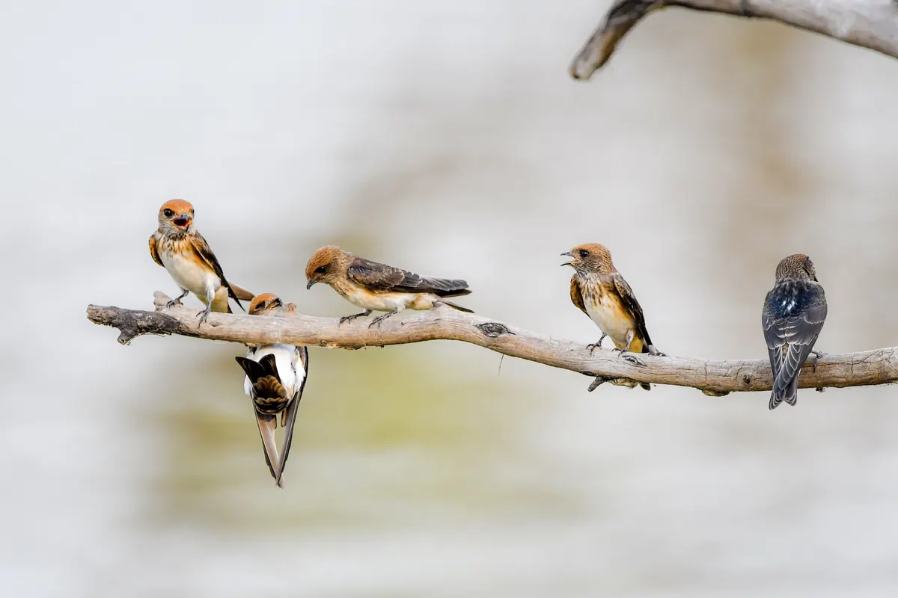
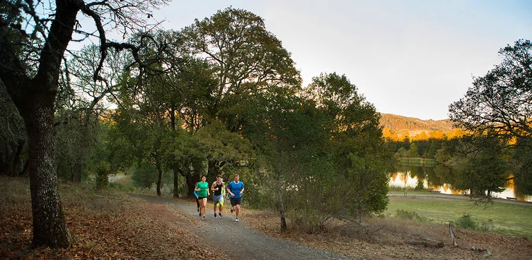
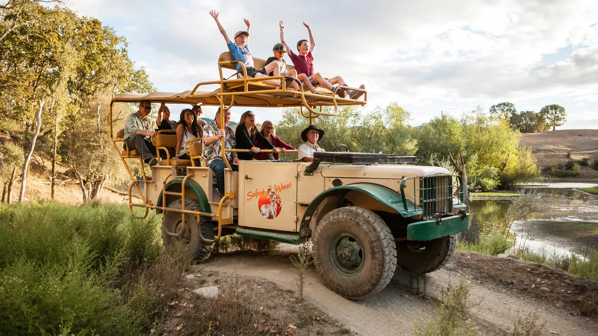

Santa Rosa is a city, but its edges are wild. Within a short drive of downtown you can walk a lakeside loop past herons and turtles, climb into oak woodland where black-tailed deer graze, or sit quietly at the edge of a wetland that has recorded more than 200 bird species. Here are the best places to see wildlife in and around Santa Rosa, what lives there and how to visit.

Spring Lake and Howarth Park
Spring Lake Regional Park, on the east side of town, is the easiest place to start. Visit Santa Rosa lists ducks, geese, great blue herons, turtles and river otters around the lake, and Sonoma County Regional Parks adds egrets, hawks, woodpeckers, owls, jays, warblers and sparrows for birders. Spring Lake and neighboring Howarth Park are connected by trails.
- Trails: nearly 10 miles in the park, including the paved Spring Lake Loop (2.3 miles) and the Horse Loop Trail (2.6 miles).
- Entrances: 393 Violetti Road (north) and 5585 Newanga Avenue (south).
- Hours and parking: 7 a.m. to sunset; $8 parking in fall, winter and spring, $12 in summer, free for park members.
- Dogs: allowed on leash, but not at the swimming lagoon.
For a different view of the water, Visit Santa Rosa notes you can rent a kayak or paddleboard on the lake.

Trione-Annadel State Park
Trione-Annadel State Park covers 5,092 largely undeveloped acres on the eastern edge of Santa Rosa, with meadows, redwoods, grassland, chaparral, seasonal streams and 26-acre Lake Ilsanjo. California State Parks lists over 45 miles of trails for hiking, mountain biking and horseback riding.
According to Sonoma County Tourism, wildlife commonly seen here includes black-tailed deer, western gray squirrels, skunks, opossums, coyotes and raccoons, with bobcats and mountain lions seen more rarely. Birds include western scrub jays, Steller's jays, wild turkeys, wood ducks, acorn and pileated woodpeckers, pygmy owls, black phoebes and dark-eyed juncos. In Ledson Marsh you might glimpse a California red-legged frog, a threatened species, and in spring Visit Santa Rosa points out California newts near rocks and pond edges. Turtles bask on the shore of Lake Ilsanjo.
- Where: 6201 Channel Drive, Santa Rosa.
- Hours: 8 a.m. to sunset daily, with no overnight use. There is a vehicle day-use fee.
- Easy start: the Channel Trail is relatively flat. The Lawndale area climbs from 482 to 1,236 feet.
- Dogs: only in developed areas such as Channel Drive, on leash. They are not allowed on trails, dirt roads or in the backcountry.
- Not allowed: e-bikes, drones, fires, camp stoves and barbecues.
Wildflowers can bloom as early as January, with the best displays in April and May.
The Laguna de Santa Rosa
The Laguna de Santa Rosa is a wetland system of more than 30,000 acres between Santa Rosa and Sebastopol, and its 22-mile main channel is the largest tributary to the Russian River. Sonoma County Regional Parks calls it a birding hot spot: more than 200 bird species have been recorded here, including egrets, hawks, sparrows, finches, woodpeckers and even bald eagles. Visit Santa Rosa mentions great egrets, green herons and red-shouldered hawks.
Several kinds of ducks spend the winter on the Laguna, so this is a good season to go. Sonoma County Tourism also lists river otters, endangered salmon, gray foxes, coyotes, and occasionally a bobcat or mountain lion.
- Laguna de Santa Rosa Trail: a 1.8-mile, relatively flat trail that is wheelchair-accessible and open to hikers, horse riders and bicyclists.
- From Sebastopol: a two-mile accessible gravel path starts about a seven-minute walk from the downtown Plaza.
- Dogs: leashed pets are welcome.
- Footwear: some sections get muddy in the wet season.
Shiloh Ranch Regional Park
In Windsor, just north of Santa Rosa, Shiloh Ranch Regional Park has nearly 8 miles of unpaved loop trails, including the Ridge, Creekside, Pond, Big Leaf and Canyon trails. It is a quieter option for a morning walk.
- Where: 5750 Faught Road, Windsor.
- Hours and parking: 7 a.m. to sunset; $8 parking or free for members.
- Dogs: not allowed on trails, only in the picnic area and parking lot.
Safari West
For animals you will not meet on a local trail, Safari West at 3115 Porter Creek Road is a 400-acre wildlife preserve. Visit Santa Rosa describes more than 900 animals, from giraffes and zebras to antelope, cheetahs and rhinos, seen from an open-air safari tour through grassland and oak woodland. Tours often sell out on weekends and holidays, so book ahead.

Tips for watching wildlife
- Go early in the morning or in the late afternoon, when birds are most active.
- Pick a spot downwind and sit or stand quietly.
- Wear neutral colors and skip scented lotions.
- Bring binoculars and keep your distance from animals.
Our Santa Rosa itinerary has more outdoor days, and our whale watching guide takes you to the coast.
Good to know
- Spring Lake: 7 a.m. to sunset, $8 parking outside summer, leashed dogs allowed.
- Trione-Annadel: 8 a.m. to sunset, day-use fee, no dogs on trails.
- Laguna de Santa Rosa Trail: 1.8 miles, flat and wheelchair-accessible.
- Shiloh Ranch: 7 a.m. to sunset, $8 parking, no dogs on trails.
- Safari West: book tours ahead, especially on weekends.
Stay downtown, wake up early
The best wildlife watching starts early, and a downtown base puts Spring Lake, Annadel and the Laguna a short drive away. Hotel E sits in a historic building on Old Courthouse Square, with continental breakfast before you head out and an evening happy hour when you get back. Art House Santa Rosa is a few blocks away on 7th Street.
Plan your stay downtown
Browse hotels, restaurants, wineries and attractions, all in one place.
Open the directory